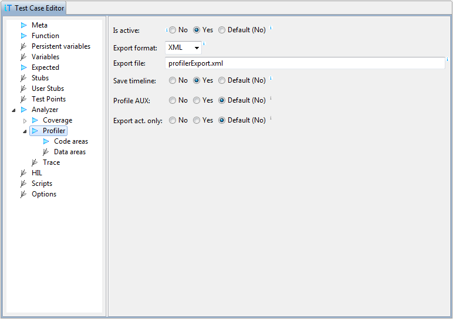
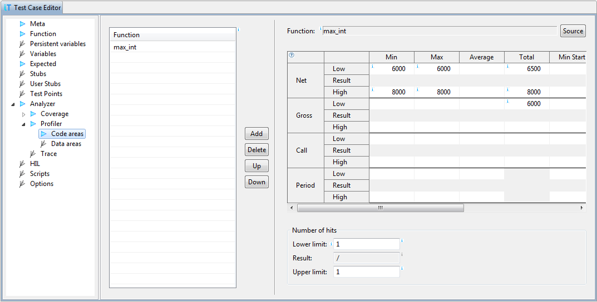
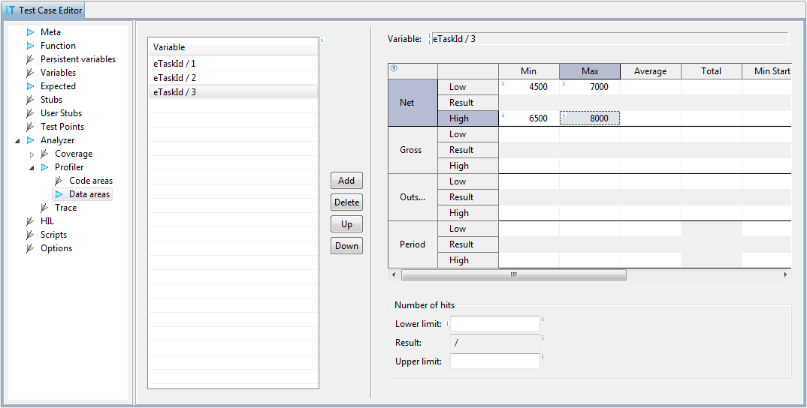

Timing requirements can be specified in Code areas and Data areas sections. For each time constraint we can specify a minimum and a maximum value, because function execution time may not be the same each time (for example due to caching), and profiler results are not 100% exact.
If a field is left empty, then it is ignored in the test results. For example, if we are interested only in the maximum execution time, it is enough to specify only the Upper limit of Max time.For data items we can also specify timing requirements on values. If variable name is followed by value, then the specified value may be assigned to variable only for the amount of time specified in profiler statistic page. This can be useful, for example, when we profile task id variable to specify the max and min execution time of specific task.
When value is not specified, then statistic requirements apply to all values measured during the test. This way we can specify the maximum execution time of every task.